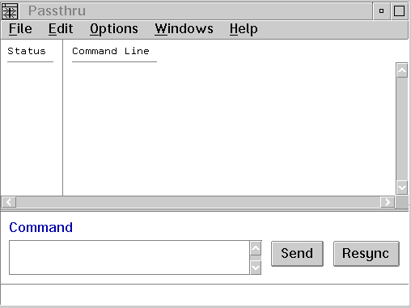

The Passthru window allows you to send commands to KDB and view its responses. The window is divided into two areas. The Command entry field area is where you enter the KDB commands, and the response area is used to display the KDB output.
The KDB response area is scrollable, which allows you to review previous KDB responses from prior commands. This output area also appends a status icon for each line to indicate your input, the debugger's acceptance of that input, and text from KDB.
Note: When you send KDB commands using the Passthru window, the debugger does not update its state. Thus, you should use this window for obtaining information instead of altering registers or data.
To send a command to KDB, do the following:
Note: Commands that cause the victim machine to resume execution (for example, g and t) should be avoided. They can cause the debugger to lock up. The debugger tries to filter out the KDB commands that can cause a lockup, but you should always exercise caution.